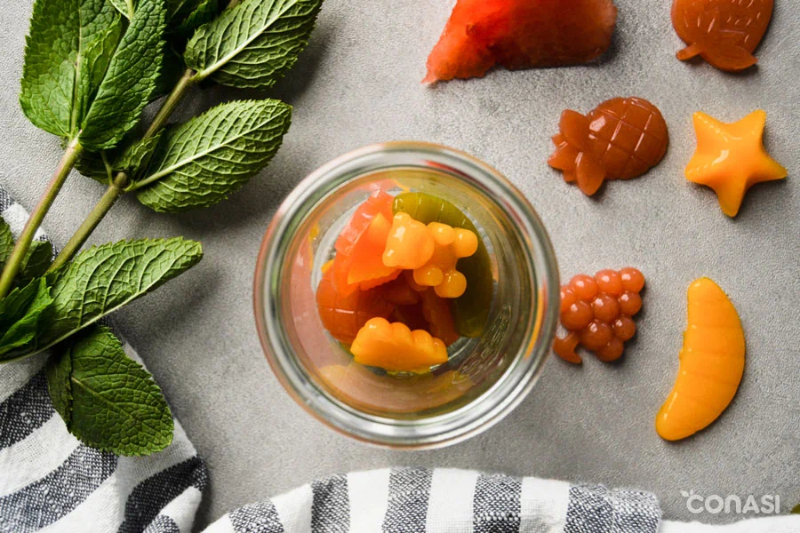
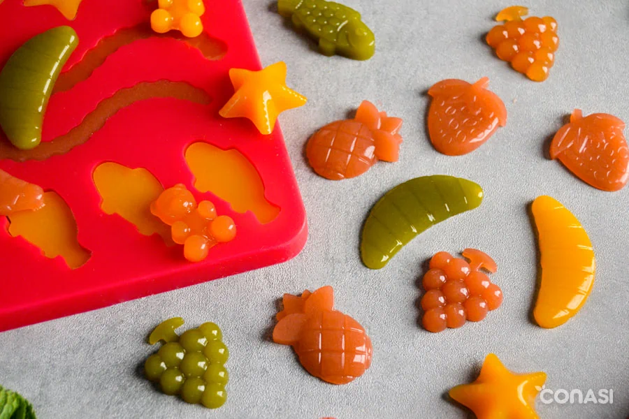
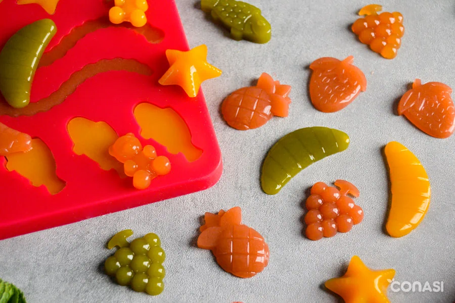

Mommitablog
Blog de una mama migrante.
Porque no necesitas estar sola en este hermoso viaje que es la maternidad
¡Bienvenidos a mi blog!
Aquí comparto experiencias y consejos sobre el viaje de ser mamá de dos hermosas niñas mientras navego la vida como migrante. Sé que esta aventura está llena de desafíos únicos, desde adaptarnos a una nueva cultura hasta construir una rutina que funcione para todos. Mi objetivo es crear un espacio donde puedan encontrar apoyo, ideas prácticas y motivación para seguir adelante con amor y valentía. ¡Gracias por acompañarme en este camino, y espero que cada entrada les brinde un poco de inspiración y ánimo para su propio recorrido!
Acerca de mi
Mi nombre es Mariangel, tengo 34 años, y soy mamá de dos maravillosas niñas, Rose y Alma. Ser mamá es, sin duda, una de mis mayores pasiones y alegrías, aunque también reconozco que no es un camino sencillo. Hace cinco años tomé la decisión de mudarme de mi país, una experiencia que ha traído consigo innumerables aprendizajes, pero también desafíos que no había imaginado. Criar a mis hijas lejos de mi familia y sin el apoyo cercano de seres queridos ha sido uno de los retos más grandes y significativos en mi vida. Este blog es un espacio que nace de mi deseo de compartir y conectar con otras mamás que, como yo, están construyendo una familia en circunstancias especiales, enfrentando los retos de la migración y la maternidad al mismo tiempo. Aquí, quiero crear una comunidad donde podamos hablar de aquellos temas que forman parte de nuestra vida diaria: desde recetas de cocina saludable, hasta hacks creativos para organizar fiestas de cumpleaños, actividades entretenidas para los más pequeños, y consejos para enfrentar los desafíos cotidianos. Te invito a sumarte a este viaje donde juntos exploraremos, aprenderemos y encontraremos formas de hacer que esta etapa sea enriquecedora, llevadera y, sobre todo, llena de amor y alegría. ¡Gracias por estar aquí y ser parte de esta comunidad!


Recetas saludables
¡Alimentar a los peques no siempre es fácil, lo sé! Pero aquí te compartiré algunas recetas saludables y divertidas que harán que la hora de comer sea una aventura para ti y tus niños. ¡Prepárate para transformar verduras en héroes, frutas en postres mágicos y comidas en momentos inolvidables!
Gomitas caseras sin azúcar
Jugosas, coloridas y ¡llenas de vitaminas! Estas gominolas caseras son la alternativa vegana y 100% natural a las golosinas comerciales cargadas de azúcares y gelatina animal. Nuestras chuches veganas se elaboran con zumo de frutas, endulzante y agar-agar.
Utensilios
- Extractor de zumos
- Cuchillo pequeño o puntilla
- Tabla de cortar
- Bol de cristal mediano
- Olla mediana
- Batidor de varillas de silicona
- Bol pequeño
- Moldes de gominolas
Ingredientes
- 10 fresas
- 4 cucharadas sirope de agave azul crudo según maduración de la fruta
- cucharaditas agar agar en polvo
Preparacion
- Cortar las fresas en trozos y licuar y extraer todo el jugo sin pulpa
- Mezclar 2 cucharaditas de agar-agar con la mitad del zumo obtenido. No deben quedar grumos y el agar-agar debe estar completamente disuelto.
- Poner la mezcla a fuego medio en una olla antiadherente y remover constantemente con unas varillas.
- Cuando comience a tomar solidez, ir añadiendo el resto del jugo y el sirope de agave según el dulzor de la fruta. Seguir removiendo hasta ver que está totalmente integrado y que vuelve a coger densidad. Quitar del fuego. Verter la mezcla con cuidado y con ayuda de una cuchara en los moldes de gomitas. Dejar reposar a temperatura ambiente 30 minutos aproximadamente.<>
- Una vez desmoldadas, las chuches se pueden cubrir con monk fruit.
 
